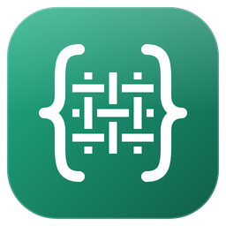
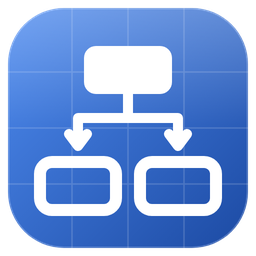

FuncLoom
The functionizer
Turn long scripts, snippets and Jupyter notebooks into verified functions and a modular package. Your original file is never changed.
pip install funcloom
funcloom modularize nb.ipynb --output pkgThree small, standalone tools for scripts, Jupyter notebooks and whole projects. No AI model, account or internet connection needed; your code is read, never run.

Turn long scripts, snippets and Jupyter notebooks into verified functions and a modular package. Your original file is never changed.
pip install funcloom
funcloom modularize nb.ipynb --output pkgFind likely bugs, apply safe fixes, format code and check structure, naming, type hints and docstrings. Ruff-compatible rule codes.
pip install refactrail
refactrail lint --fix
Draw a script, notebook or whole project as an architecture diagram (draw.io, SVG, HTML or Mermaid) without running it.
pip install flowblueprint
flowblueprint my_project/FuncLoom turns a notebook or a long script into functions and a package.
RefacTrail checks, fixes and formats the result.
FlowBlueprint draws the architecture for your team, managers and new joiners.
The tools need Python 3.12 or newer, your project does not: run them on their own Python while your code stays on 3.8–3.11. Step-by-step guide.
Each tool has a VS Code extension: search FuncLoom, RefacTrail or FlowBlueprint in the Extensions view.
Every change is checked before it is written, or refused with a reason and a line number. Original files are never changed unless you ask for it.